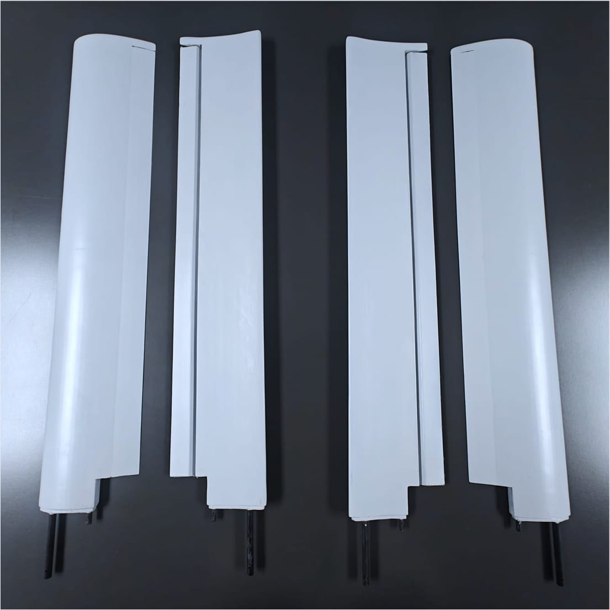
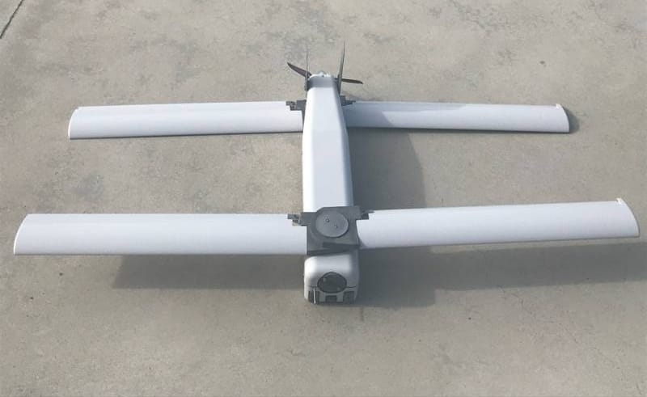
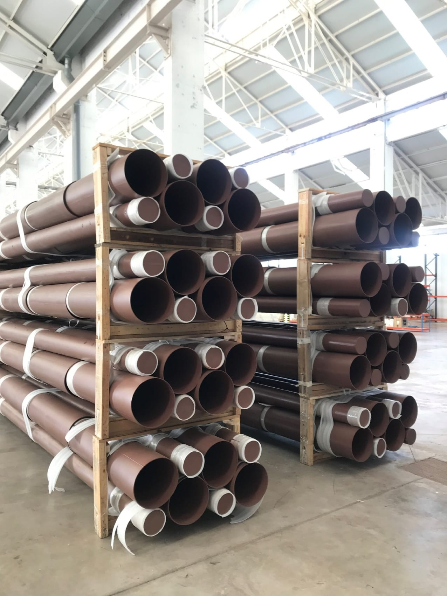

Materials to build challenges
Ingeniería de materiales compuestos con grafeno: del requisito técnico a la producción en serie.
Diseñamos el material, el proceso y la industrialización
No partimos de un catálogo: partimos de un requisito. Definimos la composición óptima en función de las prestaciones, el proceso y la aplicación final, y la llevamos hasta producción repetible.
Dos tecnologías propias, un mismo origen
Grafeno funcionalizado, fibras y resinas combinados en un proceso propietario que sustituye, a nivel estructural molecular, las fuerzas de Van der Waals por uniones covalentes. De MultiLayer sale la construcción por capas; de GOHNEX, la libertad geométrica.


Matriz polimérica
La resina base que une todo el sistema en una sola pieza continua, sin costuras.
Carga absorbente electromagnética
Disipa energía radar en forma de calor controlado: es la base del signature management.
Carga dieléctrica
Adapta la impedancia entre el aire y el material, para que la energía entre sin reflejarse.
Refuerzo estructural
La capa composite que aporta la estabilidad mecánica: esto sigue siendo, ante todo, una pieza que carga.
Aditivos funcionales
Agentes tixotrópicos y dispersantes: lo que hace que las cuatro capas anteriores se puedan fabricar de verdad, en serie.
Alas de 120 gramos por semiala, en las manos de un operador real, en un aeródromo real.



El caso sirve para demostrar la metodología, no para definir el límite del negocio: la misma capacidad resuelve estructuras, protección, movilidad y sistemas desplegables.
El salto que casi nadie da
GraphenGlass diseña el material y desarrolla la solución. GraphenTower, la plataforma industrial del grupo, la fabrica a escala.
